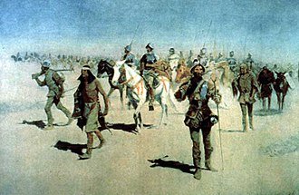
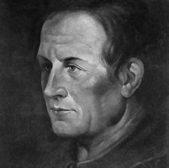
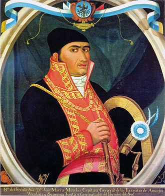

¿Qué fue?
El virreinato o reino de la Nueva España (en náhuatl: Yankwik Kaxtillan Birreiyotl) fue una entidad territorial
integrante del Imperio español, establecida en gran parte de América del Norte por la Monarquía Hispánica como
territorios de ultramar (reinos de Indias), entre los siglos XVI y XIX durante la colonización española de América.
Se originó tras la caída de México-Tenochtitlan, acontecimiento principal de la conquista, la que propiamente no
concluyó sino hasta mucho después, pues su territorio siguió creciendo hacia el norte.
La creación del virreinato está documentada en fecha de 8 de marzo de 1535. Su primer virrey fue Antonio de Mendoza
y Pacheco, y la capital del virreinato fue la Ciudad de México, establecida sobre la antigua México-Tenochtitlan.
.jpeg)
Fundacion
La locución «Nueva España» fue acuñada por el propio Hernán Cortés, quien le propuso al emperador Carlos V en su carta
de relación de 1520 llamar a toda aquella tierra «la nueva España del mar Océano», por su similitud con España en su
fertilidad, tamaño y clima. Tras las acciones militares, sometida mediante las armas, la capital mexica y en marcha
el resto del centro de México, Hernán Cortés ordenó la demolición de México-Tenochtitlan y la edificación de la nueva
capital en sus restos, disponiendo al arquitecto Alonso García Bravo el trazado al estilo español. Los españoles hicieron
de ciudad de México la capital de una construcción que denominaron Nueva España, comprendiendo dentro de ella a todos
los señoríos aliados o sometidos por las huestes de Cortés.

Franciscanos
En el siglo XVI, los españoles al mando de Hernán Cortés conquistaron a los mexicas y se hicieron de sus propiedades. La labor
misionera de la Iglesia Católica se inició con el arribo de las órdenes mendicantes: franciscanos, dominicos y agustinos, quienes
evangelizaron partiendo de Anáhuac hacia fuera las localidades más pobladas y creando nuevas en donde eran dispersas. En el
transcurso de la segunda década de tal siglo, Cristóbal de Olid, Pedro de Alvarado y Nuño Beltrán de Guzmán en nombre de la
Corona de Castilla conquistaron gran parte del territorio mexicano, salvo el norte del país, donde las tribus chichimecas
perduraron hasta principios del siglo XVII, cuando fueron casi exterminadas.

Aridoamérica
La inestabilidad de la monarquía española ocurrió durante el gobierno de José de Iturrigaray (1803-1808). Hacia fines de 1807,
Napoleón Bonaparte en acuerdo con Godoy y Carlos IV, ocupó España para invadir Portugal. En marzo de 1808, el pueblo español se
sublevó y proclamó a Fernando de Borbón, como rey de España. Napoleón a través de las abdicaciones de Bayona entregó la corona de
España a su hermano José Bonaparte y dio inicio a la guerra de la Independencia Española.
Sucesora de esta conspiración fue la Conspiración de Querétaro, encabezada por Miguel Hidalgo y formada por Miguel Domínguez,
corregidor de Querétaro y su esposa Josefa Ortiz de Domínguez, los militares Ignacio Allende, Juan Aldama y Mariano Abasolo.
La conspiración fue descubierta e Hidalgo adelantó la insurrección para el 16 de septiembre, en la madrugada, cuando inició
la guerra de la Independencia de México, con el hecho conocido como Grito de Dolores.
